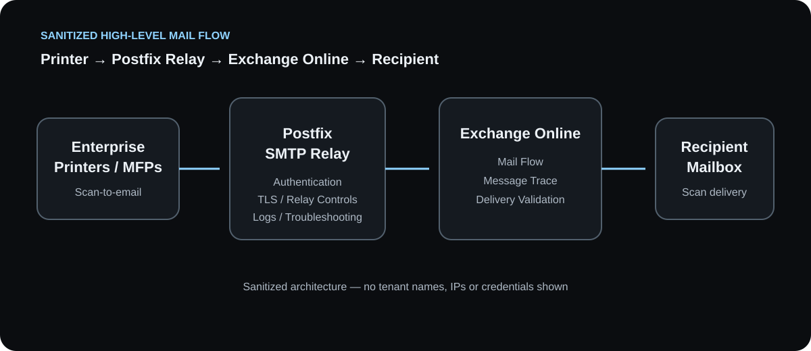

Secure Printer Scan-to-Email Integration
Design and deployment of an enterprise scan-to-email workflow connecting multifunction printers to Exchange Online through a Postfix relay, with SMTP authentication, TLS, mail-flow validation and troubleshooting.
Challenge
Enterprise printers needed a reliable and secure method to send scanned documents to internal recipients. The solution required a controlled mail path and a supportable way to troubleshoot printer, relay and Microsoft 365 delivery issues.
Solution Architecture
Printers submit scan-generated messages to a Postfix SMTP relay. The relay handles the controlled SMTP handoff and encrypted transport before messages proceed to Exchange Online for final delivery.

Implementation Areas
01 · Printer Configuration
Configured approved SMTP settings and validated sender and recipient behavior.
02 · Postfix Relay
Used Postfix as the controlled SMTP relay layer between printers and Microsoft 365.
03 · Authentication & TLS
Validated SMTP authentication and encrypted transport requirements.
04 · Exchange Online
Validated Microsoft 365 mail-flow configuration and delivery behavior.
Troubleshooting Approach
- Validated printer network connectivity and SMTP connection behavior.
- Checked relay-side authentication and TLS negotiation.
- Reviewed Postfix logs for connection, authentication and relay failures.
- Used Exchange Online message trace to confirm Microsoft 365 delivery.
- Isolated failures layer-by-layer: printer → relay → Exchange Online → recipient.
Operational Controls
Controlled Relay Path
Centralized printer mail submission through the relay.
Secure Transport
Applied TLS requirements where supported by the design.
Traceability
Combined relay logs with Exchange Online message tracing.
Repeatable Support
Established a consistent troubleshooting sequence for delivery incidents.
Outcome
The solution delivered a structured and supportable scan-to-email workflow between enterprise printers and Exchange Online, with clear troubleshooting points across the relay and cloud mail-flow path.
Architecture Notes
This case study is intentionally sanitized. Tenant names, domains, IP addresses, credentials and other environment-specific values are omitted.